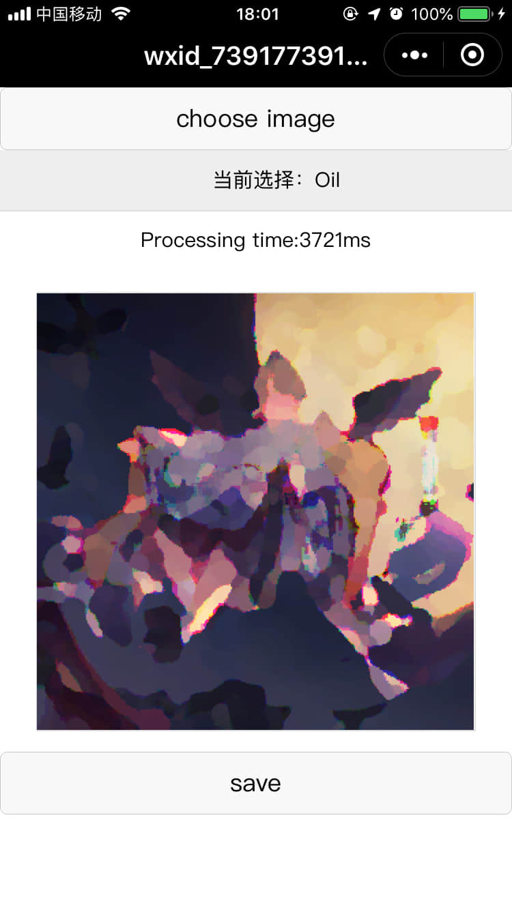
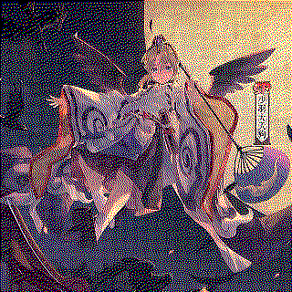
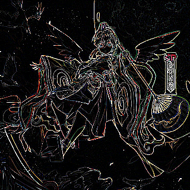
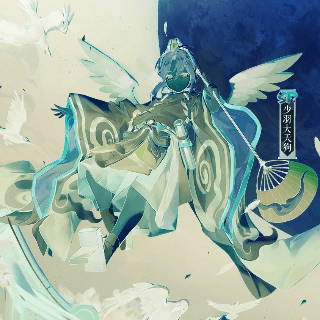
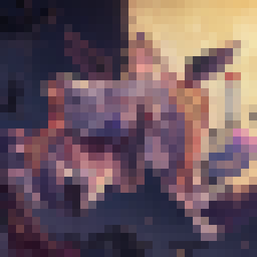

微信小程序图片滤镜
声明
滤镜处理的代码99.9%来自于arahaya/ImageFilters.js，我这里只是做了一些小改动，使其能在微信小程序里使用。
版本要求
基础库 1.9.0
简介
最近发现一个网页上好用的滤镜库，滤镜效果有几十种，就稍微做了一些更改，使其能在微信小程序使用。
其中马赛克算是一个比较有用的功能，最后那个水波旋转的效果挺有趣的。
下面的效果图均由微信开发工具模拟器生成，并且在自己手机上也测试过，能正常使用。
有些效果会比较耗时，比如高斯模糊，对于320*320的图片有时候会有几秒处理时间。这里毕竟是手机并且相当于是在网页中进行处理，所以并不建议用来处理大图。
滤镜的参数我目前是写死的，可以根据需要修改。
代码 tomfriwel/weImageFilters
效果图
屏幕截图

原图
绘制在canvas中的图片（320*320）
Binarize (srcImageData, threshold)二值化, 参数:(imageData, 0.9)
BoxBlur (srcImageData, hRadius, vRadius, quality)方框模糊, 参数:(imageData, 3, 3, 2)
GaussianBlur (srcImageData, strength)高斯模糊, 参数:(imageData, 4)
StackBlur (srcImageData, radius)高斯模糊和框模糊的折衷方案, 参数:(imageData, 6)
Brightness (srcImageData, brightness)亮度调节, 参数:(imageData, 100)
BrightnessContrastGimp (srcImageData, brightness, contrast)亮度、对比度, 参数:(imageData, 26, 13)
BrightnessContrastPhotoshop (srcImageData, brightness, contrast)亮度、对比度, 参数:(imageData, 26, 13)
Channels (srcImageData, channel)单色通道，这里为 blue Channel, 参数:(imageData, 3)
ColorTransformFilter (srcImageData, redMultiplier, greenMultiplier, blueMultiplier, alphaMultiplier, redOffset, greenOffset, blueOffset, alphaOffset)颜色变换滤波器, 参数:(imageData, 2, 1, 1, 1, 38, 0, 0, 0)
Desaturate (srcImageData)冲淡
Dither (srcImageData, levels)高频振动, 参数:(imageData, 2)

Edge (srcImageData)边缘

Emboss (srcImageData)浮雕
Enrich (srcImageData)丰富
Flip (srcImageData, vertical)翻转, 参数:(imageData, 0)
Gamma (srcImageData, gamma)γ, 参数:(imageData, 5)
GrayScale (srcImageData)灰度
HSLAdjustment (srcImageData, hueDelta, satDelta, lightness)HSL调节, 参数:(imageData, -23, 54, 19)
Invert (srcImageData)反色

Mosaic (srcImageData, blockSize)马赛克，blockSize马赛克块的大小, 参数:(imageData, 10)

Oil (srcImageData, range, levels)油画效果, 参数:(imageData, 5, 62)
OpacityFilter (srcImageData, opacity)不透明度, 参数:(imageData, 123)
Posterize (srcImageData, levels)多色调分色印, 参数:(imageData, 6)
Rescale (srcImageData, scale)重新调节, 参数:(imageData, 3.2)
Sepia(srcImageData)褐色
Sharpen (srcImageData, factor)锐化, 参数:(imageData, 9)
Solarize (srcImageData)曝光
Transpose (srcImageData)调换
Twril (srcImageData, centerX, centerY, radius, angle, edge, smooth)水波旋转, 参数:(imageData, 0.5, 0.5, 40, 360, 0, true)
将半径和旋转角度调节一下，参数:(imageData, 0.5, 0.5, 120, 90, 0, true)